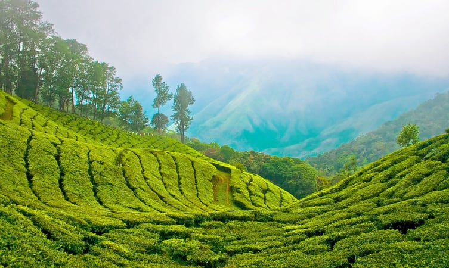

To the humankind lost in the concrete jungle, Idukki tourist places acquaints them with the splendor of nature and God’s magnificent creation. Idukki, one of the quaintest districts of Kerala, is home to a number of prominent tourist places.
The district, which lies in the Western Ghats of Kerala, is topographically known for its rocky terrain and varied verdant vegetation. Places in Idukki is full of cliffs, lush greenery, lagoons, tranquil rivers and cascading waterfalls that hypnotize the tourists and leave them with everlasting memories. Having names of Painavu, arch dam, poonchira, Idukki shows a variety in its attractions.
The 3 rivers Thodupuzhayar, Periyar, and Thalaya along with their tributaries keep Idukki evergreen. They are not only a source for irrigation and power generation but also a place for the existence of diverse flora and fauna that add charm to the Idukki. The places to visit in Idukki range from popular hill stations, Wildlife Sanctuaries, to majestic waterfalls, dams, and not to forget, the historical places.
Top Desinations
Idukki Wildlife Sanctuary
Away from the hustle and bustle of the cities, the Idukki Wildlife is located in the Thodupuzha and Udumpanchola taluks of Idukki at an altitude of 450 – 750 ft above the sea level.
The sanctuary, flanked on 3 sides by the tranquil waters of Idukki Lake, is housed amidst picturesque settings of tropical evergreen & semi-evergreen forests, meadows, and deciduous trees.The Wildlife Sanctuary, one of the places to visit in Idukki, houses hordes of wild elephants.
The other species from the animal kingdom include bison, sambar, deer, wild dogs, jungle cats, Malabar Giant Squirrel, wild boars, and tigers. Reptilians such as Cobra, viper, krait, etc will bewilder the visitor, while avian species Malabar grey hornbill, Purple Sunbird, Golden Oriole, and Black bulbul enchant him.
Best time to visit: The most favorable time to visit Idukki Wildlife Sanctuary is between December to April.
Distance: Painavu P.O. Idukki–685603. 40 km from Thodupuzha, Idukki.
Timings: All day.
Entry fee: None.
Idukki Arch Dam
The Idukki dam is constructed across the Periyar River, in a valley between the Kuravan and Kurathi hills in Kerala. The awe-inspiring, majestic dam, which stands at 167.68 meters (550 ft), is one of the highest arch dams in Asia. The dam, which is one of the Idukki tourist places, constructed by the Kerala government in 1975 and supports 780 MW hydroelectric power station that draws electricity from this dam.
The sheer magnitude of the structure along with the mountains, verdant vegetation, and 60 sq. km placid lake, which is created by the 3 dams, Idukki dam, Cheruthoni and Kulamavu, captivate the visitors.
Distance: 33 km from Idukki Dist.
Timings: Public Holidays, Saturdays and Sundays.
Entry Fees: Rs 25 for adults and Rs 5 for children. The tariff for a 15-minute boat ride for 5 persons is Rs. 600.
Munnar

Munnar is a quaint town and an idyllic hill station located in the Western Ghats of Kerala. Set at an altitude of 6000 ft in the district of Idukki, Munnar used to be the summer resort of the British rulers during colonial times. It is known for its green belt of lush forests and unending expanse of tea estates and is also home to some of the endangered species of animals like Neelakurinji and Nilgiri Tahr. It is known to be one of the most sought after tourist destinations in South India due to its pristine valleys, mountains, and exotic varieties of flora and fauna.
Munnar is a spectacular spot in Kerala, and its beauty attracts thousands of visitors every year towards it. What makes Munnar even more popular is the presence of three rivers that flow through this area, namely Mattupetti, Periavaru, and Nallathanni. Various viewpoints are segregated throughout this area, from where you can have a look at the stunning valleys, hills, and rivers. It’s pleasant hills, pristine lakes, and rocky terrains have further made it a popular trekking and camping site.
Some of the local attractions like Salim Ali Bird Sanctuary and elusive Nilgiri Tahr attract tourists from all across the world over here. Nestled between the beautiful hills of Munnar is a pristine waterfall named Atukkad Waterfall, where you can come for a romantic escapade. Photopoint is another stunning destination in Munnar filled with sparkling stream and calm woods and is an ideal spot for taking photographs.
Trekking and camping are the most popular activities that you must try during your visit to Munnar. Apart from this, you can stay in a treehouse or visit the tea plantations for a surreal experience. Safari tour of Eravikulam National Park and Shikara ride in Kundala lake should also be the top things to do in Munnar.
The weather in Munnar remains quite pleasant throughout the year, but in summer, people especially come to this place to escape from the scorching heat in other parts of the country. During monsoon season Munnar experiences heavy rainfall that might hamper your travel plan as most of the activities are restricted during this time of the year. The best time to visit Munnar is between March to September when the weather stays very pleasant.